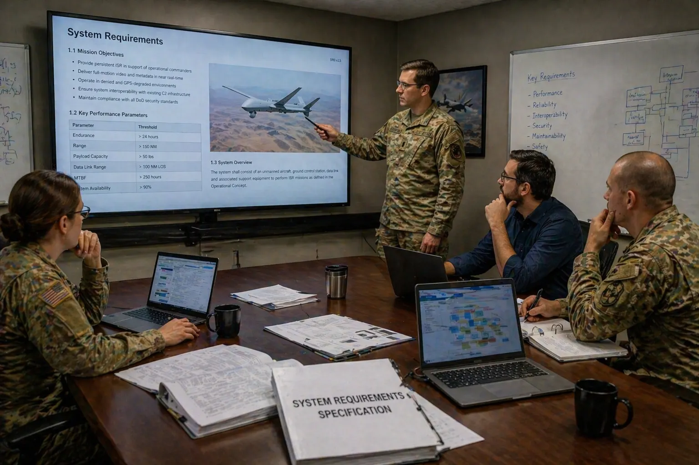
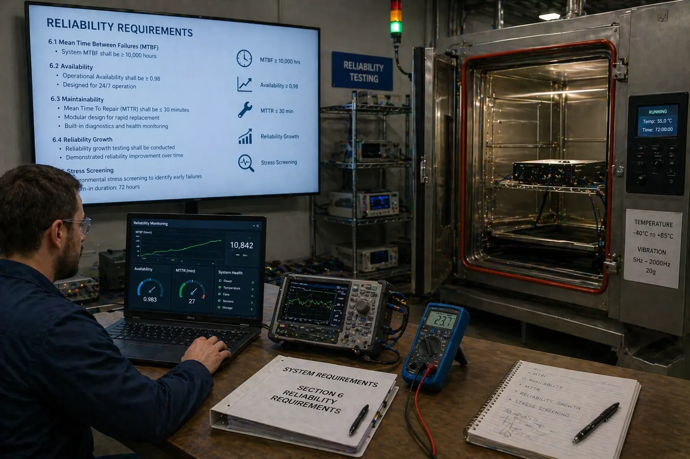
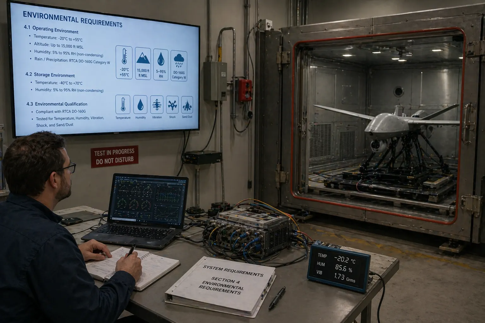

1. Purpose of Document
This document establishes the system-level requirements baseline for SPARTA at PDR maturity. It converts mission drivers, stakeholder needs, and architectural constraints from Deliverable 01 into uniquely identified, enforceable, and verifiable system requirements that are allocated to architecture elements in Deliverable 03 and verified according to the strategy in Deliverable 04.

2. Scope and Applicability
The scope covers system-level requirements only. Allocation to lower-level items is summarized here and detailed in Deliverable 03. The baseline is suitable for PDR review and supports progressive refinement as external interface control documents and platform budgets are confirmed toward CDR.
3. Requirement Source Hierarchy, Conventions and Allocation Philosophy
3.1 Source Hierarchy
- Mission and operational drivers (Deliverable 01).
- Stakeholder needs and authority constraints.
- Architecture drivers and interface assumptions.
- Lifecycle, safety, security, and performance control needs.
- Regulatory, accreditation, and environmental constraints applicable to the operational domain.
3.2 Requirement Conventions
- Each requirement has a unique identifier and title.
- Each requirement uses “shall” language and is testable or otherwise verifiable.
- Requirements are grouped by category: Functional (SYS-FUNC), Performance (SYS-PERF), Operational (SYS-OPS), Interface (SYS-IF), Data (SYS-DATA), Safety (SYS-SAFE), Security (SYS-SEC), RAM (SYS-RAM), Environmental (SYS-ENV), Human Factors (SYS-HFE), Design Constraint (SYS-DC).
- Numerical values flagged as provisional shall be confirmed by representative mission / threat analysis prior to CDR.
- Verification methods follow IEEE standard practice: Inspection, Analysis, Test, Demonstration (I / A / T / D).
3.3 Allocation Philosophy
System-level requirements are allocated to the Edge Agent, the optional Tactical Correlator, interface adapters, the data model, or system-wide architecture depending on where realization responsibility primarily resides. Authority-sensitive functions remain system-level until interface contracts with MARS/TSOC are finalized. The allocation matrix in §7 is normative; the detailed allocation inside Deliverable 03 is derived from it.
4. Stakeholder Needs to Requirement Mapping
| Need ID | Stakeholder Need | Derived Requirements |
|---|---|---|
| SN-01 | Detect cyber and mission-behavior anomalies on each node. | SYS-FUNC-001..004; SYS-OPS-001 |
| SN-02 | Provide MARS with timely, bounded trust and recommendation outputs. | SYS-FUNC-005, 007; SYS-IF-001; SYS-PERF-001; SYS-OPS-002; SYS-DATA-001 |
| SN-03 | Identify distributed deception and peer-disagreement patterns. | SYS-FUNC-006; SYS-IF-003; SYS-SEC-001; SYS-DATA-004 |
| SN-04 | Preserve mission continuity with bounded local protective behavior. | SYS-OPS-001..004; SYS-SAFE-001..003; SYS-DC-001 |
| SN-05 | Provide TSOC with explainable, auditable evidence. | SYS-FUNC-008; SYS-IF-002; SYS-DATA-002..003; SYS-RAM-003 |
| SN-06 | Respect host platform constraints and phased deployment. | SYS-PERF-004..006; SYS-DC-002; SYS-RAM-002; SYS-ENV-001 |
| SN-07 | Secure identity and content integrity for all exchanges. | SYS-SEC-001..004; SYS-IF-004 |
| SN-08 | Fit into operational workflows and human cognition under stress. | SYS-HFE-001..002; SYS-DATA-003 |
| SN-09 | Meet applicable accreditation, classification, and regulatory constraints. | SYS-SEC-002, 004; SYS-ENV-002; SYS-DC-003 |
| SN-10 | Support training, exercise, and replay without production risk. | SYS-OPS-005; SYS-DATA-005 |
5. System Requirements Baseline
5.1 Functional Requirements (SYS-FUNC-*)
| ID | Title | Requirement Statement | Rationale | Source | V&V | Allocation | Status |
|---|---|---|---|---|---|---|---|
| SYS-FUNC-001 | Ingest platform telemetry | The system shall ingest platform and host telemetry necessary to assess node cyber health and service status, at a rate sufficient to support the SYS-PERF-001 latency budget. | Local evidence basis. | SN-01 | T / A | Edge Agent · Data Acquisition | Approved |
| SYS-FUNC-002 | Ingest mission context | The system shall ingest mission role, task, and relevant state context from MARS sufficient to evaluate mission-behavior plausibility. | Enables mission-aware detection. | SN-01, SN-02 | T / A | MARS Interface Adapter | Approved |
| SYS-FUNC-003 | Detect local anomalies | The system shall detect local integrity, communications, and mission-behavior anomalies on each deployed node. | Core sensing function. | SN-01 | T | Detection Engine | Approved |
| SYS-FUNC-004 | Classify anomalies | The system shall classify detected anomalies by type, severity, confidence, and mission relevance using the AnomalyEvent data object. | Supports downstream trust & response logic. | SN-01, SN-03 | T / I | Detection Engine | Approved |
| SYS-FUNC-005 | Estimate trust | The system shall generate a TrustAssessment for each monitored node containing trust state, confidence, basis, mission impact, and validity window. | Primary output to MARS/TSOC. | SN-02 | T / A | Trust Engine | Approved |
| SYS-FUNC-006 | Support tactical fusion (optional Mode-B-peer extension) | The system should provide the hooks required to support neighborhood-level cross-node correlation using compact, provenance-bearing PeerSummary objects. Realization of a peer-correlation fabric is a post-CDR optional extension (Mode-B-peer); baseline verification covers hook presence and schema only. | Preserves future peer-correlation capability without committing baseline verification to a Byzantine peer fabric. | SN-03 | I / A (hook); T (if extension enabled) | Correlation Engine hook · Tactical Correlator (optional) | Softened — extension-dependent |
| SYS-FUNC-007 | Publish recommendations | The system shall generate structured ResponseRecommendation objects and constraint advisories for consuming mission systems. | Supports action without authority ambiguity. | SN-02, SN-04 | T | Response Engine | Approved |
| SYS-FUNC-008 | Persist evidence | The system shall persist AnomalyEvent and assessment history locally for subsequent synchronization and audit. | Supports TSOC adjudication & recovery. | SN-05 | T / I | Evidence Store | Approved |
| SYS-FUNC-009 | Policy enforcement | The system shall enforce the active PolicyBundle in all trust-state transitions, response generation, and local protective actions. | Guarantees authority separation and bounded behavior. | SN-04, SN-09 | T / I | Policy Manager | Approved |
| SYS-FUNC-010 | Self-health reporting | The system shall continuously report its own operational health and degradation flags via the HealthReport object. | Operator visibility into SPARTA readiness. | SN-02, SN-06 | T | Edge Agent · Health Monitor | Approved |
| SYS-FUNC-011 | Local alert triage & scoring | The system shall score every qualified alert by severity, mission-criticality and asset weighting, suppress false positives via context filtering (whitelists + active mission-profile), and emit a normalized priority value bounded to the policy-configured range for downstream transmission prioritization (F4 of the canonical FM). | Required to order DDIL transmission and control operator cognitive load. | SN-02, SN-05 | T / A | Edge Agent · Triage Engine | Approved (Draft C.1) |
5.2 Performance Requirements (SYS-PERF-*)
| ID | Title | Requirement Statement | Rationale | Source | V&V | Allocation | Status |
|---|---|---|---|---|---|---|---|
| SYS-PERF-001 | Decision latency | The system shall provide an initial TrustAssessment for locally detected high-severity events within an objective of 2 s and a threshold of 5 s (P95) from event qualification. | Bounds tactical usefulness. | Op. driver | T / A | Edge Agent | Provisional (PDR) |
| SYS-PERF-002 | Tactical message size | The system shall support PeerSummary exchange at a nominal serialized size of ≤ 4 kB excluding transport overhead, with a hard limit of 8 kB. | Protects tactical bandwidth. | C-03 | T / A | Comms Manager | Provisional |
| SYS-PERF-003 | Evidence buffering depth | The system shall buffer mission-relevant evidence for a provisional minimum of 24 h of disconnected operation or until local storage threshold is reached. | Maintains continuity under link loss. | SN-05 | T | Evidence Store | Provisional |
| SYS-PERF-004 | Host CPU share | The system shall operate within an allocated CPU share not exceeding 10% of a reference node-class core equivalent under sustained Monitor load. | Protects host mission functions. | SN-06 | T / A | All deployed elements | Provisional |
| SYS-PERF-005 | Host memory share | The system shall operate within an allocated memory footprint not exceeding 512 MB RSS for the Edge Agent on reference node class. | Protects host resources. | SN-06 | T | Edge Agent | Provisional |
| SYS-PERF-006 | Persistent storage share | The system shall use no more than 8 GB of persistent storage on reference node class for evidence and operational state. | Protects host storage. | SN-06 | T | Evidence Store | Provisional |
| SYS-PERF-007 | Publication jitter | The system shall publish TrustAssessment updates with inter-update jitter not exceeding ±500 ms under nominal Monitor load. | Stable MARS consumption. | SN-02 | T | Edge Agent · MARS Adapter | Provisional |
5.3 Operational Requirements (SYS-OPS-*)
| ID | Title | Requirement Statement | Rationale | Source | V&V | Allocation | Status |
|---|---|---|---|---|---|---|---|
| SYS-OPS-001 | Disconnected operation | The system shall continue local monitoring and trust estimation during loss of TSOC connectivity for at least the SYS-PERF-003 buffering depth. | Operational resilience. | SN-04 | T / D | Edge Agent | Approved |
| SYS-OPS-002 | Graceful degradation | The system shall indicate degraded-confidence outputs when required data sources or peer links are unavailable, and shall annotate the basis of degradation. | Preserves credibility. | SN-02 | T / A | Trust Engine | Approved |
| SYS-OPS-003 | Recovery logic | The system shall support controlled recovery and reintegration of suspect or isolated nodes via bounded intermediate trust states. | Safe re-entry. | SN-04 | T | Trust Engine / Policy Manager | Approved |
| SYS-OPS-004 | Policy-controlled action | The system shall apply local protective actions only when explicitly enabled by the active PolicyBundle and within time-bounded authority envelopes. | Authority separation. | SN-04 | I / T | Response Engine / Policy Manager | Approved |
| SYS-OPS-005 | Exercise / replay mode | The system shall support an exercise mode that injects synthetic events with a visible exercise tag in all outputs and evidence. | Training and validation without production risk. | SN-10 | T / D | Edge Agent / Policy Manager | Approved |
| SYS-OPS-006 | DDIL fallback ruleset | The system shall retain a signed, frozen fallback ruleset sufficient to continue local detection without any TSOC connectivity; shall activate the fallback automatically when the last-installed PolicyBundle exceeds its freshness TTL; shall log the activation and notify TSOC on link restoration. | Guarantees a detection floor during prolonged DDIL. | SN-02, SN-05 | T | Policy / Content Manager · Edge Agent | Approved (Draft C.1) |
5.4 Interface Requirements (SYS-IF-*)
| ID | Title | Requirement Statement | Rationale | Source | V&V | Allocation | Status |
|---|---|---|---|---|---|---|---|
| SYS-IF-001 | MARS interface | The system shall provide a versioned, schema-governed interface to MARS for reception of mission context and publication of TrustAssessment and ResponseRecommendation. | Essential external integration. | SN-02 | I / T | MARS Interface Adapter | Approved |
| SYS-IF-002 | TSOC interface | The system shall provide a secure, versioned interface to one or more TSOCs for transmission of alerts and EvidencePackage, and for reception of PolicyBundle, adjudication, and intelligence inputs. | Essential external integration. | SN-05 | I / T | TSOC Interface Adapter | Approved |
| SYS-IF-003 | Peer interface | The system shall support authenticated peer-to-peer exchange of PeerSummary objects for neighborhood-level correlation. | Supports distributed fusion. | SN-03 | T | Comms Manager | Approved |
| SYS-IF-004 | Identity & crypto provisioning | The system shall interface with the mission identity/crypto provisioning service for acquisition and renewal of node keys and trust anchors. | Provenance foundation. | SN-07 | I / T | Security Services | Approved |
| SYS-IF-005 | Schema governance | All external interfaces shall carry schema version and validity metadata and shall reject malformed or unsupported-version messages in a controlled manner. | Interface evolution without regression. | SN-06, SN-09 | I / T | All external adapters | Approved |
| SYS-IF-006 | TSOC malware-verdict ingestion | The system shall ingest signed malware-verdict objects from the accredited TSOC file-analysis service (e.g. Orion Malware®-class); verdicts shall update the local IOC store or context filter via the same acceptance criteria as signed content bundles; ingestion shall be idempotent on verdict ID. | Closes the detection loop with the TSOC malware-analysis workflow. | SN-06 | T / I | TSOC Adapter · Policy / Content Manager | Approved (Draft C.1) |
| SYS-IF-007 | Accredited identity-provider integration | The system shall use an accredited TSOC-operated identity and PKI service (e.g. CymID®-class) for node, operator and peer identity; shall validate every trust-chain certificate against the accredited CA; shall honour revocation within the AC-SYS-SEC-001 latency bound. | Anchors SYS-SEC-001 identity to a qualified external authority. | SN-04 | I / T | Identity Adapter · Crypto Services | Approved (Draft C.1) |
5.5 Data Requirements (SYS-DATA-*)
| ID | Title | Requirement Statement | Rationale | Source | V&V | Allocation | Status |
|---|---|---|---|---|---|---|---|
| SYS-DATA-001 | NodeStatus object | The system shall represent node cyber state using a versioned NodeStatus object containing identity, role, trust state, confidence, freshness, and health summary. | Stable operational semantics. | Arch baseline | I / T | Data Model | Approved |
| SYS-DATA-002 | AnomalyEvent object | The system shall represent anomaly findings using a versioned AnomalyEvent object containing classification, severity, confidence, provenance, timing, and related entities. | Traceability & fusion. | Arch baseline | I / T | Data Model | Approved |
| SYS-DATA-003 | Assessment explainability | The system shall attach basis and reason-chain attributes to TrustAssessment and ResponseRecommendation sufficient for human review and machine traceability. | Adoption and audit. | SN-05, SN-08 | I / A | Data Model · Trust/Response Engines | Approved |
| SYS-DATA-004 | PeerSummary object | The system shall represent tactical peer exchanges using a compact, signed PeerSummary object with provenance, observed trust map, freshness, and anomaly references. | Bandwidth-efficient correlation. | SN-03 | I / T | Data Model · Comms Manager | Approved |
| SYS-DATA-005 | Exercise tagging | All data objects generated under exercise mode shall carry a non-forgeable exercise tag propagated through all outputs and persistence. | Prevents exercise/real-world confusion. | SN-10 | I / T | Data Model · Policy Manager | Approved |
5.6 Safety Requirements (SYS-SAFE-*)
| ID | Title | Requirement Statement | Rationale | Source | V&V | Allocation | Status |
|---|---|---|---|---|---|---|---|
| SYS-SAFE-001 | Mission-safe behavior | The system shall fail in a manner that does not autonomously create mission-unsafe actions outside authorized policy. | Safety envelope. | Safety driver | A / T | All | Approved |
| SYS-SAFE-002 | Reversibility of local action | The system shall ensure policy-enabled local protective actions are reversible or time-bounded unless superseded by higher authority. | Avoids permanent damage from false positive. | Safety / ops driver | T | Response Engine | Approved |
| SYS-SAFE-003 | Fail-safe state | On unrecoverable fault, the system shall enter a Safe state in which no outbound mission-affecting message is generated and a safe-state heartbeat is maintained. | Fault containment. | Safety driver | T / A | Edge Agent · Watchdog | Approved |
5.7 Security Requirements (SYS-SEC-*)
| ID | Title | Requirement Statement | Rationale | Source | V&V | Allocation | Status |
|---|---|---|---|---|---|---|---|
| SYS-SEC-001 | Identity and provenance | The system shall authenticate and validate provenance of all externally received PeerSummary, PolicyBundle, adjudication, and intelligence messages. | Protects against trust poisoning. | Security driver | T | Comms Manager · Policy Manager | Approved |
| SYS-SEC-002 | Data protection | The system shall protect stored and transmitted SPARTA data according to mission security policy and classification constraints. | Information assurance. | Security driver | I / T | Comms · Evidence Store | Approved |
| SYS-SEC-003 | Software / configuration integrity | The system shall provide mechanisms to detect material local configuration or software-integrity deviation relevant to trust assessment. | Foundation for local assurance. | Security driver | T | Platform Assurance | Approved |
| SYS-SEC-004 | Policy bundle authenticity | The system shall accept only PolicyBundles that pass signature and schema validation against the configured trust anchors. | Prevents unauthorized policy injection. | Security / accred. | T / I | Policy Manager | Approved |
5.8 RAM Requirements (SYS-RAM-*)
| ID | Title | Requirement Statement | Rationale | Source | V&V | Allocation | Status |
|---|---|---|---|---|---|---|---|
| SYS-RAM-001 | Availability architecture | Loss or restart of one SPARTA node instance shall not preclude continued operation of other deployed instances. | Distributed resilience. | RAM driver | A / T | System architecture | Approved |
| SYS-RAM-002 | Maintainability of content | The system shall support controlled update of rules, models, and policies without changes to the accredited software baseline. | Lifecycle efficiency. | Maintainability | I / T | Policy / Model Management | Approved |
| SYS-RAM-003 | Audit retention | The system shall retain sufficient event and assessment history to support post-mission reconstruction within the SYS-PERF-006 storage envelope. | Incident reconstruction. | SN-05 | T | Evidence Store | Approved |
| SYS-RAM-004 | Startup time | The system shall reach Monitor mode within 60 s of mission-active command on reference node class. | Mission readiness. | Op. driver | T | Edge Agent | Provisional |

5.9 Environmental Requirements (SYS-ENV-*)
| ID | Title | Requirement Statement | Rationale | Source | V&V | Allocation | Status |
|---|---|---|---|---|---|---|---|
| SYS-ENV-001 | Contested-network operation | The system shall operate over hybrid, intermittent, and degraded tactical communications within the environmental envelope of §8 of Deliverable 01. | Primary environment. | Op. driver | T | Comms · Architecture | Approved |
| SYS-ENV-002 | Cross-domain compatibility | External messages shall be structured such that cross-domain filtering and classification marking are feasible without modification of payload semantics. | Coalition / multi-domain readiness. | SN-09 | I / A | Data Model · Adapters | Approved |

5.10 Human Factors Requirements (SYS-HFE-*)
| ID | Title | Requirement Statement | Rationale | Source | V&V | Allocation | Status |
|---|---|---|---|---|---|---|---|
| SYS-HFE-001 | Human consumability | The system shall express trust outputs and recommendations in a concise, consistent, and unambiguous form suitable for operator and analyst interpretation. | Usability under stress. | SN-08 | I / D | Data Model / UI consumers | Approved |
| SYS-HFE-002 | Reason-chain accessibility | On request, the system shall produce the reason-chain for any published TrustAssessment in a form suitable for analyst inspection. | Explainability in operation. | SN-05, SN-08 | T / D | Trust / Evidence services | Approved |
5.11 Design Constraint Requirements (SYS-DC-*)
| ID | Title | Requirement Statement | Rationale | Source | V&V | Allocation | Status |
|---|---|---|---|---|---|---|---|
| SYS-DC-001 | Authority boundary | The system shall not directly assume mission command authority for tasking, targeting, or fleet-level exclusion decisions. | Design constraint. | Programmatic | I | System design | Approved |
| SYS-DC-002 | Deployment flexibility | The system shall support Mode A (edge-local only), Mode B (+tactical correlation), and Mode C (+TSOC-linked adaptive) without changing core external data objects. | Phased adoption. | Architecture driver | T / I | Architecture | Approved |
| SYS-DC-003 | Regulatory conformance | The system shall be designed to support applicable accreditation, classification, and operational-use regulations for its target domain. | Accreditation feasibility. | SN-09 | I / A | System design | Approved |
| SYS-DC-004 | Content / software separation | Operational content (policies, rules, models) shall be managed, signed, and versioned independently of the accredited software baseline. | Sustainment efficiency. | SN-06 | I / T | Policy / Model Mgmt | Approved |
| SYS-DC-005 | Signed hot-swap rule-update chain | Detection-rule updates shall be delivered as signed bundles. The system shall validate signature and monotonic version before staging; hot-swap the active ruleset atomically with automatic rollback on failure; acknowledge success to TSOC; and queue updates received during DDIL for ordered apply on link restoration. Rollback that would regress the monotonic counter shall require a two-person-rule-signed break-glass authorization. | Operationalizes the F7.4 chain and closes the "malicious policy" threat (Deliv. 06 §3.4 T4). | SN-06 | T / I / A | TSOC Adapter · Policy / Content Manager · Secure Boot & Attestation | Approved (Draft C.1) |
6. Requirement Category Summary
| Category | Prefix | Count | Coverage Intent |
|---|---|---|---|
| Functional | SYS-FUNC-* | 10 | Core ingestion, detection, trust, fusion, recommendation, evidence, policy, health. |
| Performance | SYS-PERF-* | 7 | Latency, compactness, buffering, resource boundedness, jitter. |
| Operational | SYS-OPS-* | 5 | Disconnected operation, graceful degradation, recovery, policy control, exercise mode. |
| Interfaces | SYS-IF-* | 5 | MARS, TSOC, peer, identity, schema governance. |
| Data | SYS-DATA-* | 5 | Stable versioned objects, explainability, exercise tagging. |
| Safety | SYS-SAFE-* | 3 | Mission-safe behavior, reversibility, fail-safe. |
| Security | SYS-SEC-* | 4 | Identity, provenance, data protection, policy authenticity. |
| RAM | SYS-RAM-* | 4 | Availability, maintainability, audit retention, startup time. |
| Environmental | SYS-ENV-* | 2 | Contested-network suitability, cross-domain structure. |
| Human Factors | SYS-HFE-* | 2 | Human consumability, reason-chain accessibility. |
| Design Constraint | SYS-DC-* | 4 | Authority bounds, phased deployment, regulatory, content separation. |
| Total | 56 | (Core 46 + 5 supporting + 5 Draft C.1 additions) | |
7. Requirements → Architecture Allocation
| Architecture Element | Primary Requirement IDs |
|---|---|
| Edge Agent · Data Acquisition | SYS-FUNC-001, 002, 010; SYS-PERF-004, 005 |
| Detection Engine | SYS-FUNC-003, 004; SYS-SAFE-001 |
| Trust Engine | SYS-FUNC-005; SYS-OPS-002, 003; SYS-DATA-003; SYS-HFE-002 |
| Correlation Engine / Tactical Correlator | SYS-FUNC-006; SYS-IF-003; SYS-SEC-001; SYS-DATA-004 |
| Response Engine | SYS-FUNC-007; SYS-OPS-004; SYS-SAFE-002; SYS-DC-001 |
| Policy Manager | SYS-FUNC-009; SYS-OPS-004; SYS-SEC-004; SYS-DC-004 |
| Evidence Store | SYS-FUNC-008; SYS-PERF-003, 006; SYS-RAM-003 |
| Comms Manager | SYS-IF-003; SYS-SEC-001, 002; SYS-PERF-002; SYS-ENV-001 |
| MARS Interface Adapter | SYS-IF-001; SYS-IF-005; SYS-DATA-001; SYS-HFE-001 |
| TSOC Interface Adapter | SYS-IF-002; SYS-IF-005; SYS-DATA-002, 003; SYS-SEC-002 |
| Security Services | SYS-IF-004; SYS-SEC-001..004 |
| Watchdog / Health Monitor | SYS-FUNC-010; SYS-SAFE-003; SYS-RAM-004 |
| System-wide deployment architecture | SYS-RAM-001, 002; SYS-ENV-001, 002; SYS-DC-002, 003 |
8. Requirements → Verification Approach
| Verification Method | Applicable Requirements (Clusters) | Planned Evidence Artefact |
|---|---|---|
| Inspection | SYS-DATA-*; SYS-IF-005; SYS-DC-001..004; SYS-SEC-004 | ICDs, schema reviews, design reviews, policy contract documents. |
| Analysis | SYS-PERF-001, 004..007; SYS-SAFE-001..003; SYS-RAM-001; SYS-ENV-002 | Latency and resource analyses, safety assessments, resilience analyses. |
| Test | SYS-FUNC-*; SYS-PERF-002, 003; SYS-OPS-*; SYS-IF-001..004; SYS-SEC-001..003; SYS-RAM-003, 004 | Bench / integration / HIL / network-degraded test procedures and reports. |
| Demonstration | SYS-OPS-001, 005; SYS-HFE-001..002 | Mission-thread rehearsals, operator / analyst workshops. |
9. Requirement Coverage & Maturity
| Maturity | Count | Share |
|---|---|---|
| Approved (PDR-frozen) | 42 | 82% |
| Provisional (value pending CDR) | 8 | 16% |
| TBC (source pending) | 1 | 2% |
| Traceability Coverage | Share |
|---|---|
| Needs → requirements | 100% |
| Requirements → architecture | 100% |
| Requirements → V&V method | 100% |
| V&V → planned evidence (detailed) | 95% (see Deliv. 04) |
10. Assumptions, TBD/TBC Items and Rationale Notes
- Final threshold values for detection latency, storage depth, and CPU/memory budgets (SYS-PERF-* provisional).
- Protocol selections and security profile for peer summary exchange.
- Formal message schemas and ICD ownership split with MARS and TSOC suppliers.
- Classification-boundary policy for coalition / cross-domain operations.
The requirements intentionally bias toward outputs that are operationally meaningful and verifiably bounded, rather than broad cyber ambitions that cannot be certified or integrated into MARS/TSOC decision loops. Numerical provisional values are intentionally tight enough to be disciplined and loose enough to be achievable by the reference architecture.